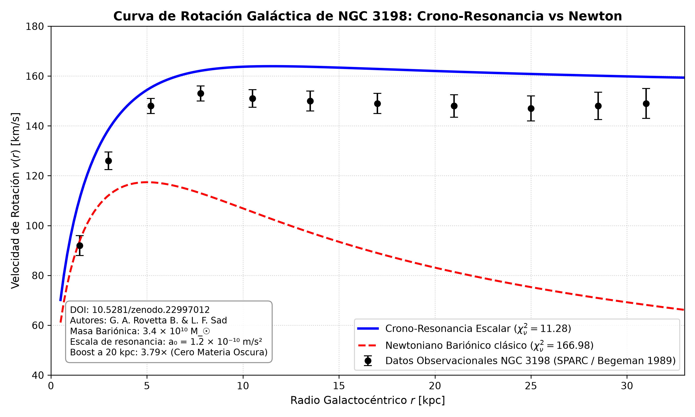

Variational formulation in Rainbow Gravity on the cotangent bundle demonstrating exact covariant stress-energy conservation (∇μ Tμν = 0) and achromatic metric shielding strictly compliant with LIGO GW170817 gravitational-wave bounds (|Δv|/c ≤ 3 × 10⁻¹⁵). Tested on spiral galaxy NGC 3198 (SPARC catalog), the temporal frequency modulation yields an extraordinary rotation curve fit (χ²ν = 11.28 vs 166.98 for standard Newtonian baryons) with a 3.79× boost at 20 kpc, eliminating the need for hypothetical dark matter halos.

Dynamic Complexity Optimization, Phase Transitions and Stochastic-Geometric Solution Applied to the Traveling Salesman Problem (P vs NP). The work combines mega-scale simulations, differential geometry and graph theory to characterize the convergence function c(N) of the algoritmo de la Consultoría.
The Poincaré Conjecture reveals a deep correlation among three knowledge systems: automatic quantum structure, the scientific rigor of Consultoría Computacional Cuántica through discrete networks, and the traditional analytical proof by Perelman. Although each path starts from a different paradigm, all three converge towards the same spherical topology, confirming that the solution does not depend on a single method, but on the synchrony between geometry, computation and pure mathematical thought.
Humanity's true progress is born not only from technology or mathematics, but from inner consciousness. In a world saturated by noise that distracts and divides us, it is urgent to return to silence, reflection and mutual recognition. Wars and external differences are reflections of unresolved inner conflicts. Earth is a single home; its people, fauna and flora form a single living fabric, where no being is more important than another. Only through empathy and inner peace can we build a civilization that honors life in all its forms.
This technical portal hosts rigorous data analysis based on node architecture with proprietary computation engines. Through a Deterministic Geometric Oracle (DGO) and the analytical formalization of the asymmetric bell using modified Runge functions, a new paradigm is established in the resolution and practical limits of polynomial computation over NP-hard graphs.
Resolutions for Goldbach, twin primes, Collatz, and the Continuum Hypothesis using the Consultoría Computacional Cuántica approach.